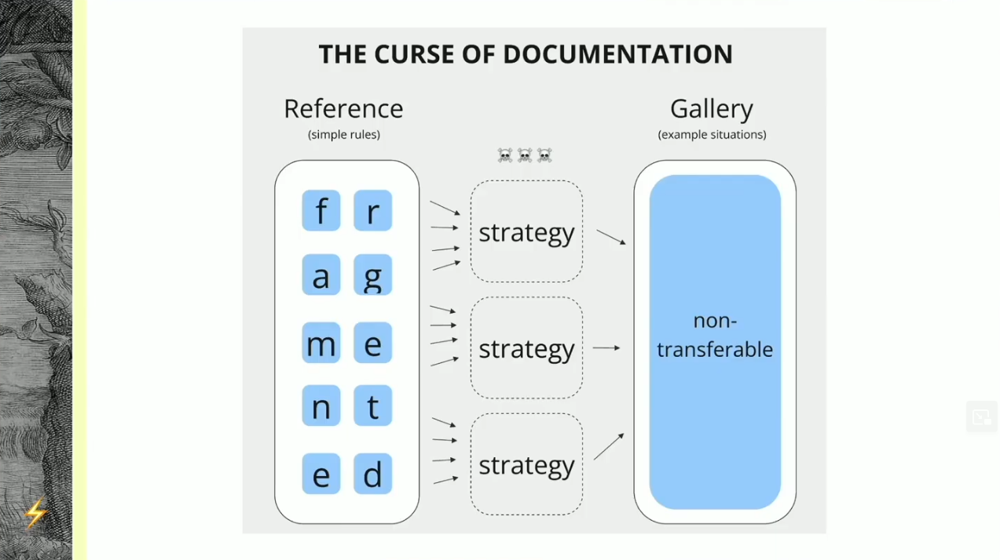
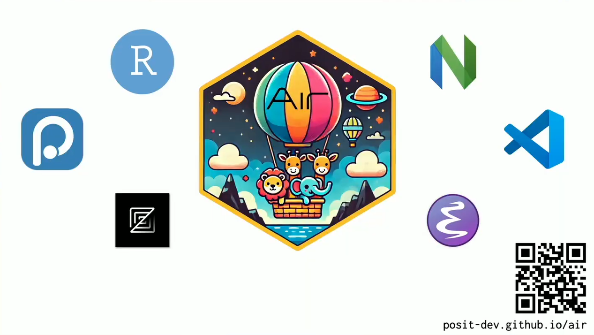

In October, the Python Software Foundation announced that it had made the difficult decision to forgo a $1.5M National Science Foundation grant. The grant was intended to improve structural vulnerabilities in the Python language and PyPI, but came with the unpalatable stipulation that no part of the PSF as a whole could “operate any programs that advance or promote DEI [diversity, equity, and inclusion]”. This followed a similar announcement over the summer from The Carpentries, a non-profit devoted to teaching researchers good practices in reproducible software engineering and data management, made a similar decision earlier this year.
But what even is open source without diversity? What would it even mean to “promise” to strip diversity from an ecosystem predicated on identifying shared needs and collaboratively developing solutions across different timezones, cultures, and contexts?
Looking back on 2025, nothing illustrated the importance of diversity across open source communities better than posit::conf(2025). My most memorable session1 was titled “Sparking Developer Joy”.
Taken at face value, the session offered fantastic and tangible idea for improving the developer/user experience in both R and python. I’d recommend it on those merits alone. But on subtler and unspoken level, the combination of talks served as a celebration of how much stronger both the R and python ecosystems have become as developers who “grew up” in their different contexts and communities cross-polinitate ideas.
I end the year with a brief reflection on the session and what they represent about the broader state of python and R tooling (with a few digressions on core R history). I won’t attempt to recap these great talks in full; I highly encourage everyone to watch them in full on YouTube for a clarity of thought and level of detail to which I won’t aspire. Instead, I’ll just briefly pull on the throughlines: intellectual diversity makes communities and tools better.
But don’t let me distract you. As the clock winds down on 2025, if you are considering making charitable donations, consider helping the PSF or The Carpentries fill the gap that their values have cost them.
R package empathy in python
R has always known its target audience. Built by statisticians, it just gets us data people.
Rich Iannone and Michael Chow gave stunning back-to-back talks on how to build python packages with better user experiences. Rich focused broadly on how to make a package “nice” while Michael detailed a specific, novel approach to address a common gap in documentation. Both pointed to examples from Great Tables (R/python) and pointblank (R/python), two tools that they developed first for R and then for python.
Each talk illustrated how the strong community norms from R package development have already and can continue to improve the python analogs.

Rich’s talk Making things nice in python defined five aspects of making python packages “nice”: making them compatible with existing workflows:
- Accommodating different needs / backends (e.g. DataFrame interoperability with
narwhals) - Making cumbersome things easy by adopting language-standard syntactic sugar (e.g.
polarscolumn selectors) - Making learning easy (e.g. with user guides, examples, blogs, in addition to a standard API reference)
- Shipping batteries-included for onboarding with built-in example datasets
Of these, I claim 2-4 as having distinctly R-like roots. Interoperability, syntactic sugar, and making the cumbersome easy echoes the tidyverse design principles, and shipping sample data in packages is a “first class” activity in R package development with the standard data/ directory for this specific purpose.
In fact, beyond packages, the core R language has shipped with sample data since… before it existed! In-built datasets trace back to R’s precursor S. The iris package help page cites to the 1988 book “The New S Language” as including this dataset, although it then appeared as a three-dimensional array now found in the built-in iris3 object.

Michael’s talk The curse of documentation doubled down on the importance of “medium weight” documentation to fill the chasm between an atomic API reference and an all-in gallery of fully baked examples. Specifically, he argued for the importance of long-form documentation that helps users understand the mental model and core philosophy behind a package API so they can reason about it. He then went on to provide some brilliant frameworks for writing such resources, but I’ll leave you to watch the video since that’s not the point of this post.
Here, again, I cannot help but feel the R-native influence on these suggestions. Vignettes have deep roots in the tradition of R packages. Fritz Leisch, an early pioneer on the R Core Development Team, first unlocked the ability to render R code in LaTeX through Sweave (a precursor to R Markddown and then Quarto) which first enabled vignettes. The concept of vignettes was formalized with the release of R 2.14.0 (“The Great Pumpkin”) in 2011 which introduced the vignettes/ directory distinct from the inst/doc/ directory which stores reference-level documentation (the exact contrast Michael draws in his talk!) The convention became so prevalent that each Bioconductor package requires at least one vignette. More recently, vignettes gained increasing visibility as R Markdown removed the LaTex dependency, making vignettes easy (and dare I say joyful?) to write, and more recently pkgdown helped create aesthetic documentation websites featuring vignettes framed as articles.
Python-rigor devtools for R
What made this session even more powerful, however, was that reminder that ideas do not flow in just one direction. We also saw Davis Vaughn and Lionel Henry present on Air, an R language server and code formatter which promises blazing speed and a stunning hex sticker.

While the Air README acknowledges multiple non-R inspirations , the most obvious parallel is to Astral’s ruff, a performant python code styler also written in Rust.
Air isn’t the only present from the Posit to R developers. A similar and exciting project from Posit with a clear python analog is rig. Rig helps developers manage and switch between multiple R installations with a look, feel, and aspirations similar to python’s pyenv. While installation woes and simultaneous installation management tend to be more critical to the python language, bringing this modern developer tooling to the R world is a useful contribution to developing more robust tooling.
Beyond these more concrete examples, python has long been a first-moved in bringing engineering practices into engineering data work due, in turn, to the diversity of its own community mixing DS and traditional software engineering audiences. Countless testing, orchestration, CI/CD tools in R have followed python corrolaries, likely due to some amount of influence.2
It goes both ways
This also is not to say that R is uniquely and exclusively good at design and python is uniquely and exclusively good at engineering. It goes both ways. For example, python’s scikit-learn API has an undeniable impact on tidymodels, as the R community sought an analogous all-encompassing tool for modeling with common workflows for training pipelines; conversely, while CRAN has its ups and downs, Julie Tibshirani recently published a reflection on the value of the paradigm, perhaps with takeaways for the wildwest of PyPI.
The examples are endless, and enumeration is not the point. I’ll just end the year saying that I’m thinking about the room I was in in Atlanta back in August where people with wildly different backgrounds came together to learn and incidentally happened on the perfect example of how different contexts colliding makes them better. Should we be so lucky.
Footnotes
And memory is no small feat given that I’d made the questionable decision to get up at 2AM to fly in that same day and had been awake about 14 hours by the time of the session↩︎
A related discussion happened on a recent episode of The Test Set podcast as the crew debated whether R or python is more diverse with python spanning more distinct domains (e.g. DS vs SWE) but R having much more breadth among data people (e.g. biostats, polisci, etc.)↩︎